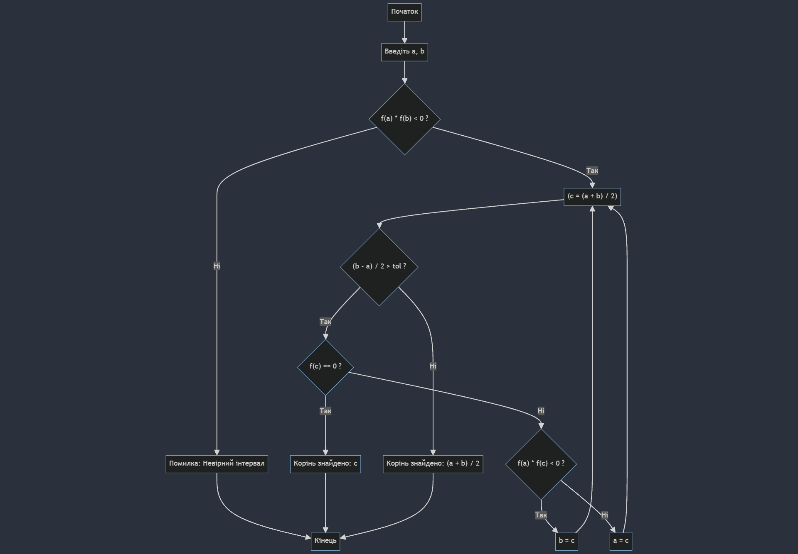

Завдання 2
Ознайомитися з одним із чисельних методів та виконати його реалізацію мовою програмування високого рівня (за винятком Basic, Pascal, Fortran), засобами програмування Scilab та перевірити правильність отриманих програмних рішень за допомогою інших засобів Scilab.
Варіант 7
Метод дихотомії
Нелінійне рівняння:
\[2x^3 + 9x^2 - 10 = 0\]
Метод дихотомії
Метод дихотомії (або метод половинного поділу) — це чисельний метод для розв'язання нелінійних рівнянь. Він полягає в тому, щоб поступово звужувати інтервал, у якому знаходиться корінь рівняння, поки інтервал не стане досить малим.
Рисунок 1 - Блок схема методу дихотомії
Як працює метод дихотомії?
1. Вибір початкового інтервалу
2. Обчислення середини інтервалу
3. Перевірка знаків
4.
Ділення інтервалу навпіл та вибір підінтервалу, де функція змінює знак, поки довжина інтервалу
не стане меншою за задану точність
5. Коли інтервал стає достатньо малим, середина цього
інтервалу вважається наближеним значенням кореня